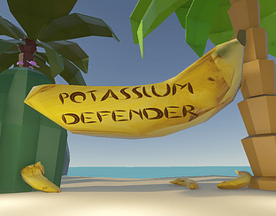
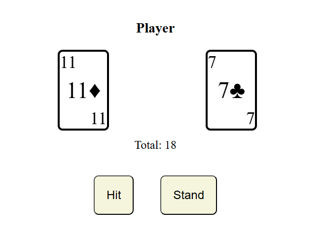
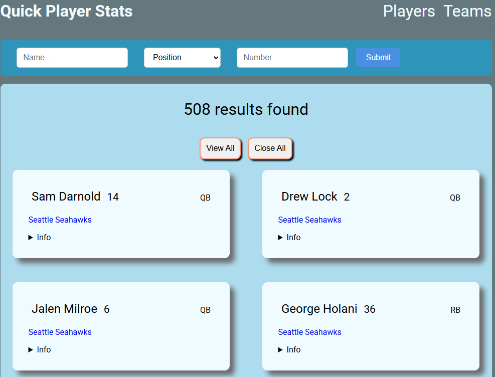
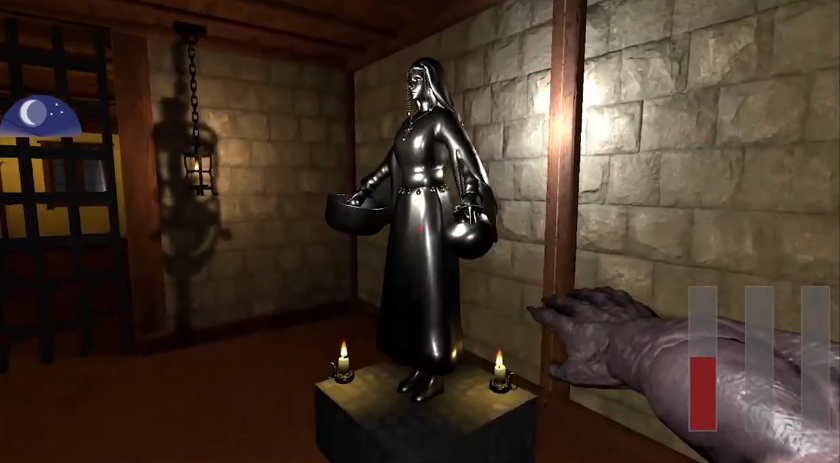
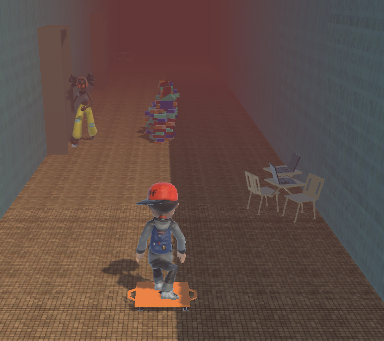
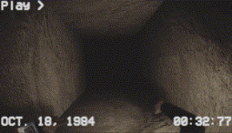
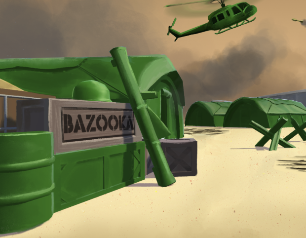

Potassium Defender
- C#
- Unity
A horde mode game made for the 2 week Indie City All-Stars 2026 Game Jam. Developed player systems, enemy wave generation, and music.
Hey! My name's Angelo, and I enjoy crafting experiences for others to enjoy.
Game developer, and growing backend developer, with a focus to help others achieve their goals.

A horde mode game made for the 2 week Indie City All-Stars 2026 Game Jam. Developed player systems, enemy wave generation, and music.

A project to learn basic javascript DOM manipulation, Classes, and import/export.

Personal project to explore backend in the Java & Spring ecosystem. Data scraped and stored in postgres database.

Collaborative Resident Evil style puzzle game where players must be on their toes if they want to win - Made for Chicaghoul Game Jam

A collaborative project where players must perform stunts and reach the end as fast as possible - Made for Indie City All Stars Jam

A game where the player must collect as much cheese as possible while avoiding increasing rats at each floor. Maze Generation and roaming enemies - Made for Chicaghoul Game Jam

A collaborative top down 3D game where the player must fight their way through toy soldiers utilizing the environment and various weapons - Made for final capstone project
Hello! I'm Angelo, a software developer from Chicago with a background in game development.
I love the opportunity to bring people together and share memorable experiences.
Alongside game dev, I also enjoy traditional software development as it allows me to build out practical tools that have a wider reach.
My work is driven by a love of connection and problem solving, and ultimately is aimed towards improving the wellbeing of the user.
Outside of developing I like to frequent long walks, check out new spots, and express myself with music.
Being in the moment and meeting like minded others is something I look forward to every day and seeing what opportunities can arise.